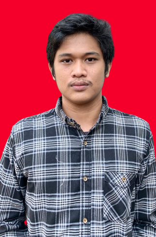

I am an IT professional with two years of experience as an IT Application Support. I am skilled in database management, SQL, scripting, technical support and server administration. Experienced in troubleshooting applications, providing technical support, and optimizing application performance. I also have strong analytical and problem-solving skills, along with effective communication abilities to provide clear support to teams and end users.
Unversitas Budi Luhur - Jakarta, Indonesia (2018-2022)
Bachelor of Informatics Technology, 3.49/4.00
March 2023 - March 2025
December 2022 - February 2023